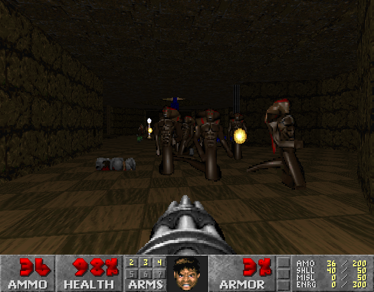
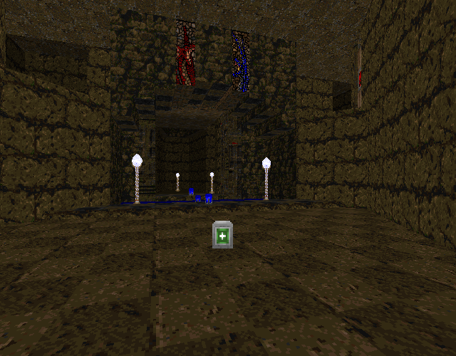

<!DOCTYPE html>
<html>
<title>Untitled Quake-themed WAD | Doom: Rediscovering History</title>
	<meta charset="utf-8">
	<meta content="OWLY.FANS" property="og:title" />
	<meta content="Because Sometimes Doom is just bad" property="og:description" />
	<meta property="og:image" content="https://owly.fans/floppy.png">
	<meta content="#9B4F96" data-react-helmet="true" name="theme-color" />
    <meta name="keywords" content="owly, cass python, neocities, neozones, brit, uk, archive, site ran by a stud, england, wales">
	<link rel="shortcut icon" type="image/x-icon" href="../../../favicon.ico">
    <link rel="stylesheet" href="../../style.css">
    </html>
	    <body><p><a href="../">Back to index</a></p>
		<h1>Untitled Quake-themed WAD</h1>
			<p></p>
			<hr>
			<p></p>
			<em>Cass &#xAB;Owly&#xBB; Python, 2024-04-08</em>

			<p><figure>
        <center><a href="ijeuucpixe_large.png"></a></center>
				<figcaption><p>The third map for <em>Untitled Quake-themed WAD</em> that puts the player against a good few <a href="https://doomwiki.org/wiki/Imp">imps</a> and a <a href="https://doomwiki.org/wiki/Mancubusm">mancubus</a> (not seen in the screenshot).</p>
					<p>We're using <a href="https://github.com/freedoom/freedoom/releases/tag/v0.9">Freedoom v0.9</a> as it was published around the same time.</p>
		</figcaption>
		</figure></p>

<p>The Doom community is kind of interesting as far as I'm aware, it kind of all agreed to congregate onto only a handful of websites, not your Twitters or fandom dot com's, but <a href="https://doomwiki.org/wiki/Doomworld">Doomworld</a>, which has been the unofficial home of Doom online since the late 1990s. There are other places people go on, of course, there are a few splinter communities, such as those who are around on websites like YouTube; in the <strong>very</strong> early days, <a href="https://doomwiki.org/wiki/Usenet_groups">Usenet was quite active</a>, but now it's all but dead, but one place for Doom fans to have an uncensored talk about their favourite video game would be the one and only 4chan.</p>

<p>What might be a bit of a surprise to some, not <em>everything</em> that comes out of 4chan is terrible. Well okay, most stuff that comes out of there is a waste of time, but viewing the /vr/ board, that is for retro video games, from time to time can be interesting, especially as there is usually an active thread or two dedicated to the one and only Doom. This place, among other things, allows modders to post their latest WADs and get honest feedback, and while I've never posted on this board, I can see how this could be quite useful to some and I can say can be certainly interesting to see some mods that might not even be posted on Doomworld or any other place.</p>

<p>This brings up to today's WAD, and it's untitled by unknown from an unknown year! . Are you kidding? We seriously don't know the WADs name, who made it, <yell>or</yell> what year it's from??</p>

<p>Yep! Sorry to disappoint, but I legit could not find much on this one. On my old website, I did in fact host a mirror download for the mod, as well as listing its unofficial title, that being <em>Untitled Quake-themed WAD</em>. Ah yes, my favorite WAD, Untitled Quake-themed WAD (hey, if you think <em>that's</em> clunky, the filename for the mod is <tt>ijeuucpixe.wad</tt>!). Following this, as far as I am aware, this would have been made pre-June 2015, with me finding it on <a href="https://pastebin.com/aiEgdB3K">a Pastebin listing of &#xAB;Recent /vr/ wads&#xBB;</a>. Sorry if you wanted to know more, but that's all I can say, that's just kind of the nature of 4chan where you can never <em>truly</em> know who made what.</p>

			<p><figure>
        <center><a href="doomguy_and_ranger_by_bojustbo.png"></a></center>
				<figcaption><p>Fannart of Doomguy and Ranger from Quake by <a href="https://newgrounds.com/art/view/bojustbo/doomguy-and-ranger-sitting-in-a-tree-k-i-s-s">BoJustBo</a>. We're not going to talk about this art, we just put it here cuz it looks cool.</p>
		</figcaption>
		</figure></p>

<p>As for the contents of the WAD, it starts the player in a small rectangle room with the default <a href="https://doomwiki.org/wiki/Doom_II_music"><em>Running from Evil</em> MIDI music</a> playing in the background, I think the first thing most regular Doom players will notice will be the tech-like theme that the author has opted to use for the three levels this mod has, using a custom texture pack. I do agree with the unofficial title given to this, as it is very reminiscent of <a href="https://doomwiki.org/wiki/Id_Software">id Software's</a> later game, <a href="https://quakewiki.org/wiki/Quake">Quake</a>. In Quake, the whole thing seems to be very... gray and brown, I guess, verses Doom, something that can be a <a href="https://lospec.com/palette-list/playpal">very colorful game</a>, we have monsters that have reds, blues, pinks, and other bright colors that are seen in the vanilla game, but with Quake, <a href="https://lospec.com/palette-list/quake">it's a whole nother story</a>.</p>

			<p>Is there anything wrong with Quake opting to use these color themes? Well, <em>duh</em>, no, obviously not. It was a creative decision by id that added to the charm of the game, much like how <a href="https://doomwiki.org/wiki/Wolfenstein_3D">Wolfenstein 3D</a> also features a large number of bright colors</p>

			<p>Now, as for <em>Untitled Quake-themed WAD</em>, I suppose past me thought that this WAD was trying to emulate Quake's whole feel and vibe, and I can see what I was thinking, but also. No. Just because a Doom WAD has a tech-themed level, doesn't make it inspired by another game. Ugh, I feel like I've been talking about Quake and the wallpaper of this WAD for one too many sentences.</p>
			
			<p>So anyway, the player is in a rectangular room. I'm not sure if I really care that much for this starting area as it doesn't really show anything off that is all that exciting, just four walls, two large lamps on the floor, and directly in front of you is some ammo, <a href="https://doomwiki.org/wiki/Shotgun">a shotgun</a>, and a door that will lead to a lift into the real first fight of the map. With that said, the lighting in this room is very fancy and looks good, but I just think it would be cool if there was just <em>more</em> to this starting room, hell, what about adding a dead player sprite or some blood on the wall? Adding some small set dressing to the starting area can really help with the overall feeling of your level. What I'm trying to say is that this place is really not that amazing, but it has some cool parts to it, for sure.</p>
			
			<p>Leaving the spawning room and now having the shotgun, you'll soon come across your first foe, that being <a href="https://doomwiki.org/wiki/Revenant">Mr. Bones himself, a revenant</a> as well as a single <a href="https://doomwiki.org/wiki/Hell_knight">hell knight</a> and oddly <a href="https://doomwiki.org/wiki/Lost_soul">one lost soul</a> that is kind of just floating there for some reason. I don't know why one lost soul has been placed here, I guess to mess up the player? I don't know, the monster never really tripped me up, even on replay, but hey, I didn't make the WAD. One thing that I don't like in the map itself is in the area with the hell knight slash lost soul combo, there just happens to be a <a href="https://doomwiki.org/wiki/Super_shotgun">super shotgun</a> just waiting for you to pick up. But also. You <em>just</em> picked up a normal shotgun, so what's the point in that then? Personally, I would have removed the first gun from the starting room and moved it to where the super shotgun is, just to make the starting room a <em>little</em> harder...</p>

			<p><figure>
        <center><a href="map03_large.png"></a></center>
				<figcaption><p>Screenshot from <yell>map03</yell> showing an example of the use of architecture and the use of Quake-like colors.</p>
		</figcaption>
		</figure></p>
			
			<p>For a first level, it can be complex at some points, having to press buttons and returning to past areas, but it certainly was a lot of fun, especially for a level that can be played in vanilla-compatible ports, like <a href="https://doomwiki.org/wiki/Chocolate_Doom"><em>Chocolate Doom</em></a>, and the second level might have been as fun, but dude, if there is one thing that needs looking at and changing is just the overall gameplay loop of monsters and how you can kill them. For the most part of these three maps, you'll come across the same three monsters; imps, revenants, and a handful of <a href="https://doomwiki.org/wiki/Heavy_weapon_dude">chaingunners</a> in the last level, and the way that the level presents these horrible beings is that they'll make you battle against a good handful of the same foe type at a time with your limited option of weapons, either a <a href="https://doomwiki.org/wiki/Chaingun">chaingun</a> or a shotgun of some type. This really hurts the maps as a whole as it doesn't make the fights unique and gives the player very few opportunities to actually use the mechanism of in-fighting. And the thing is, it's mostly low-tier mobs that you'll see, and thanks to the lack of the number of health pick-ups, you'll slowly lose your health over time until you get killed, I mean <em>until you get unalived</em> a good partway in the level, making your death seem unfair and annoying.</p>
			
			<p>In the first map, there is a secret that leads to <a href="https://doomwiki.org/wiki/Rocket_launcher">a rocket launcher</a>, and as far as I can tell, there are no other points in the whole WAD where you get the chance to use it more than twice. It would have been nice if there was ammo for this weapon around the levels as rockets are rather good for crowd control in Doom, and they can work against the player equally well thanks to them giving a lot of damage to you if you accidentally fire it on yourself. I could imagine this would be a good compromise, especially as a lot of the later half of <em>Untitled Quake-themed WAD</em> is set in narrow corridors, making the potential risk-reward of them high and a fun challenge.</p>
			
			<p>Despite the gameplay that can get repetitive at times due to the lack of weapon options, the whole thing was made by someone who has a lot of talent when it comes to map creation; each room is clearly its own thing and can easily be told apart from another, plus I do like the choice in the texure pack that was used, it just really makes the whole thing one-of-a-kind, and the inspiration of Quake isn't shoved into your face. It's a good balance of having its own levels that I don't <em>think</em> are directly from Quake (I've only played the first episode and some of episode two, so I might be wrong LOL) as well as taking some notes from the later id Software game, namely in the use of textures that while are <em>not</em> Doom, they still fit well within it.</p>

		<p>While not the next best thing since sliced bread, the clunkly named <em>Untitled Quake-themed WAD</em> is well worth a look at and it certainly makes me wish that there was just more to play of it, oh, but <em>if only I knew who the author was!</em></p>
		
			<p><strong>Downloads</strong></p>
			<p>A local copy of the WAD can be <a href="ijeuucpixe.zip">downloaded here</a> - enjoy.</p>
				
<p></p>
	<hr>	
			
			<p>That art used on this page, <a href="https://newgrounds.com/art/view/bojustbo/doomguy-and-ranger-sitting-in-a-tree-k-i-s-s">&#xAB;Doomguy and Ranger sitting in a tree&#xBB;</a>, as made by BoJustBo, is licensed under <a href="../../../license/ccbync3_0">CC BY-NC-SA 3.0</a>.</p>
			
<p><strong>Want to support OwlyFans? <a href="/nft/">See our NFTs</a>!</strong>
</p>

	
	<p>Copyright 2024 - <script type="text/javascript">
var today = new Date()
var year = today.getFullYear()
document.write(year)
</script> by Cass &#xAB;Owly&#xBB; Python, licensed under the <a href="../../../license/fopl-mdp-v2" title="The Freedom Owl Public License: Modifications, Distributions, and Private Use Version 2" alt="The Freedom Owl Public License: Modifications, Distributions, and Private Use Version 2">FOPL-MDP V.2</a>. Please see <a href="../../../humans.html">humans.html</a> for full credit and thanks. Peace and love.</p>
<p><font color="black"><center>&#x2605;</center></font></p>
<p>
<div style="text-align:right">
<a href="http://bytemoth.nfshost.com/cd5k-net/tau">&tau;</a>
</p>
</div>
<p></p>
	<script src="../../../ruffle/ruffle.js"></script>
<script src="../../../script.js"></script>
    </body>
</html>